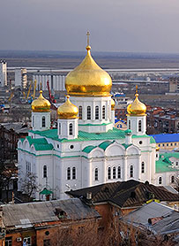

Собор Рождества Пресвятой Богородицы
Адрес: г. Ростов-на-Дону, ул. Станиславского, 58
Дата постройки: 1854—1860 годы
Мощи святых: Пророк Даниил, Праведная Анна
Главным попечителем строительства являлся церковный староста Константин Михайлов-Нефедов. На средства потомственного почётного гражданина Ростова И. С. Панченко были расписаны стены собора, приобретены иконы, изготовлена дорогая церковная ограда и установлены ценные кресты на купола.